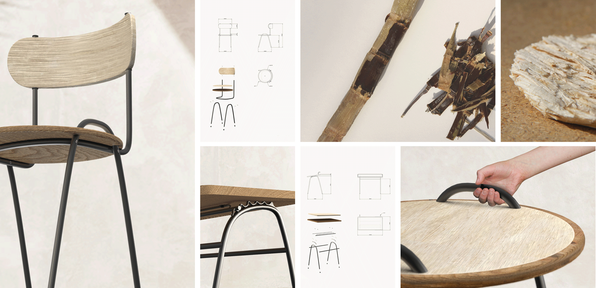
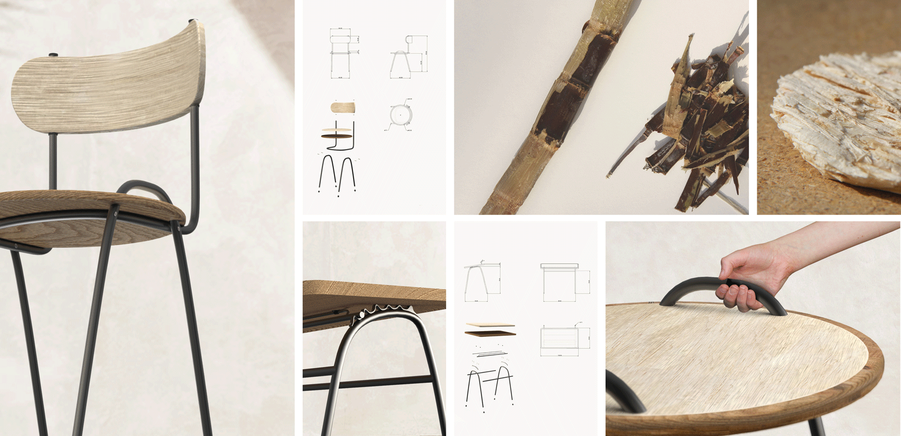

Canamelle
2021
Aujourd’hui, la production croissante de déchets devient problématique et pose de nombreuses questions environnementales.
Les industries laissent de côté des résidus qui pourraient être davantage recyclés.
L’un des plus gros producteurs de déchets est l’agriculture, dont la canne à sucre est une des plantes les plus cultivées,
en particulier dans les Antilles. L’emploi de la bagasse, son déchet organique, est alors une opportunité à la fois au niveau
économique et écologique.
Cette gamme de mobilier scolaire, évolutif et autonome, adapté à la croissance de l’enfant et la vie de classe,
est une nouvelle alternative plus durable. Elle met en avant et relance une économie locale au profit des établissements
de Guadeloupe, obligés d’importer leur mobilier.
 
